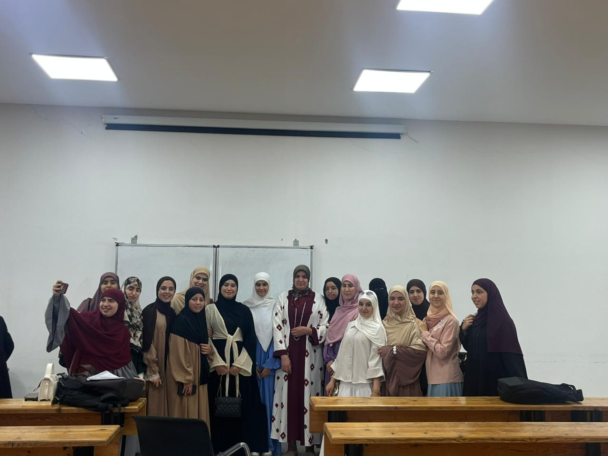
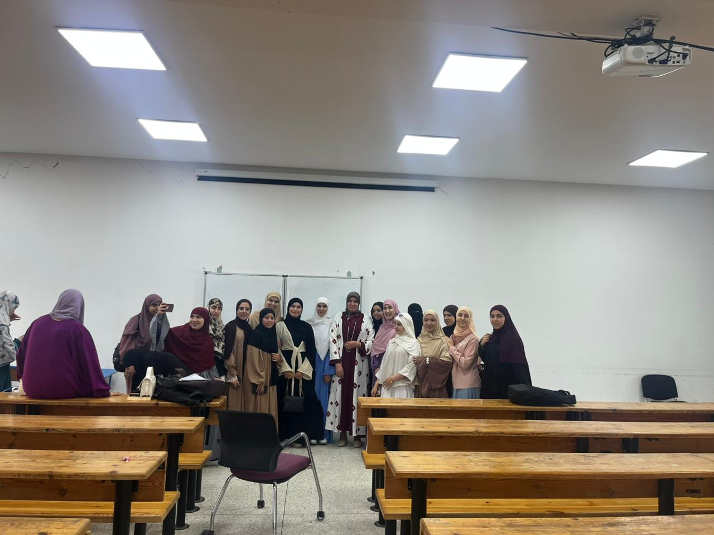
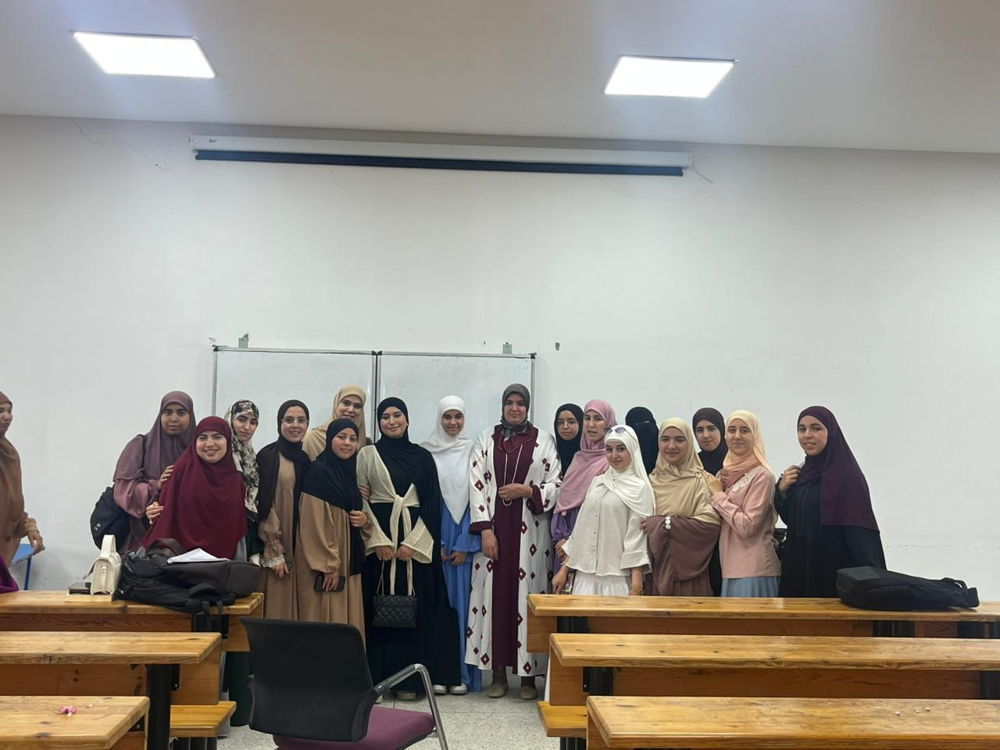
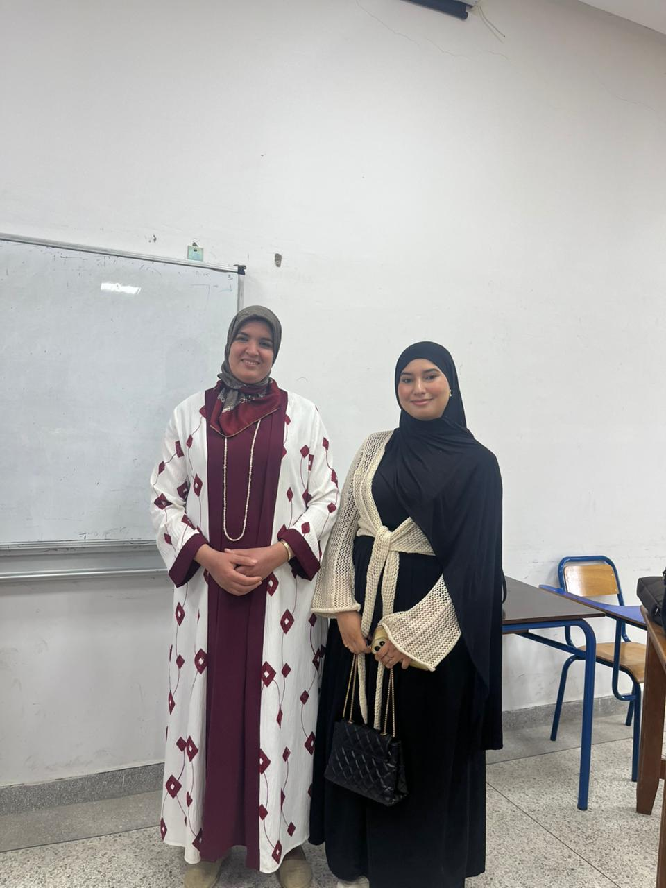
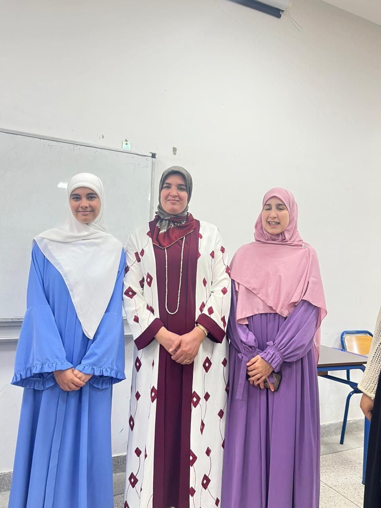
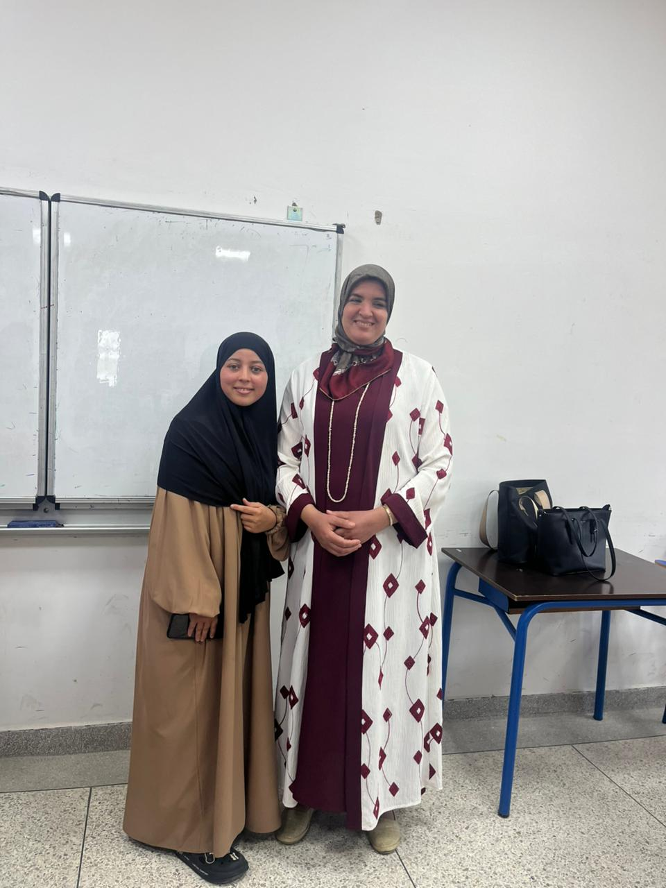

الإنتاج العلمي والبيداغوجي للدكتورة عائشة الطويل






سلك الإجازة في التربية – تخصص التعليم الثانوي: الدراسات الإسلامية.
الفصل الرابع
المدرسة العليا للأساتذة – مرتيل
الموسم الجامعي 2025/2026
نبذة عن العمل
تشرفت بتدريس وحدة "الخلافة الراشدة والقيم الإنسانية" لفائدة طلبة الفصل الرابع بسلك الإجازة في التربية، تخصص التعليم الثانوي – الدراسات الإسلامية، وهي وحدة تجمع بين الدراسة التاريخية والتحليل التربوي، وتهدف إلى إبراز النموذج الحضاري الذي قدمته الخلافة الراشدة في ترسيخ قيم العدل والشورى والحرية والمسؤولية والتعايش، واستثمار هذه القيم في بناء شخصية المعلم وتنمية وعيه برسالته التربوية.
وقد سعت هذه الوحدة إلى تجاوز الاقتصار على عرض الأحداث التاريخية، من خلال قراءة التجربة الراشدية قراءة مقاصدية تستخلص منها المبادئ والقيم القادرة على الإسهام في مواجهة التحديات التربوية والمجتمعية المعاصرة، وتعزيز ثقافة المواطنة والحوار والمسؤولية لدى الطلبة.
أهداف الوحدةتسعى هذه الوحدة إلى إعداد أستاذ قادر على استلهام القيم الإنسانية من التراث الإسلامي، وتحويلها إلى ممارسات تربوية تسهم في بناء شخصية المتعلم، وترسيخ ثقافة الحوار والتسامح والعدل، بما ينسجم مع أهداف التربية الحديثة والثوابت الوطنية للمملكة المغربية.
رسالة الوحدة:إن دراسة الخلافة الراشدة ليست استحضارا لأحداث تاريخية مضت، وإنما هي قراءة في تجربة حضارية غنية بالقيم والمبادئ، نستمد منها ما يعيننا على إعداد أجيال تؤمن بالعدل، وتحسن إدارة الاختلاف، وتتحمل مسؤوليتها في خدمة المجتمع